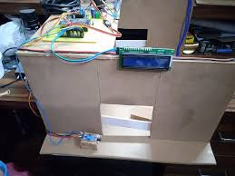

Smart Car Parking and Irrigation Systems

Project Overview
An innovative IoT-based solution that combines smart car parking management with automated irrigation systems. The project utilizes ESP32, Arduino, and Raspberry Pi to create an efficient and sustainable urban infrastructure solution.
Smart Car Parking System
- Hardware Components
- ESP32 microcontroller
- IR sensors for vehicle detection
- Servo motors for gate control
- LED indicators for slot status
- LCD display for information
- Features
- Real-time parking slot monitoring
- Automated gate control
- Slot availability display
- Mobile app integration
- Payment system integration
Smart Irrigation System
- Hardware Components
- Raspberry Pi for central control
- Soil moisture sensors
- Water flow sensors
- Solenoid valves
- Weather station integration
- Features
- Automated watering based on soil moisture
- Weather-based scheduling
- Water usage optimization
- Remote monitoring and control
- Data analytics and reporting
Technical Implementation
- Hardware:
- ESP32 for parking system
- Arduino for sensor integration
- Raspberry Pi for central control
- Various sensors and actuators
- Software:
- Arduino IDE for microcontroller programming
- Python for Raspberry Pi control
- ThingSpeak for IoT data management
- Mobile app for user interface
- Cloud Integration:
- ThingSpeak for data visualization
- Real-time monitoring dashboard
- Data analytics and reporting
Project Challenges & Solutions
- Challenge: Sensor reliability
Solution: Implemented sensor redundancy and error checking
- Challenge: Power management
Solution: Used efficient power modes and solar power integration
- Challenge: System integration
Solution: Developed modular architecture with clear interfaces
Learning Outcomes
- Gained expertise in IoT system design and implementation
- Enhanced skills in hardware-software integration
- Learned about sustainable urban infrastructure solutions
- Improved understanding of sensor networks and data management